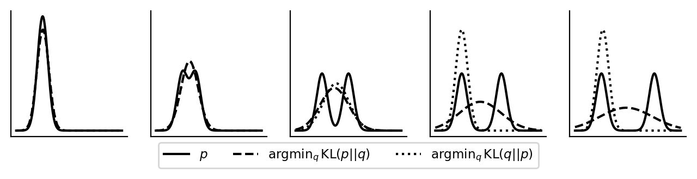

“Mode Covering” 和 “Mode Seeking” 是在概率建模、生成模型（如 GANs、VAEs）以及变分推断等领域中常用来描述不同优化目标或行为的术语。它们的核心区别在于模型如何处理数据分布中的多模态性（multiple modes）。
在概率分布中，一个“mode”指的是概率密度局部最大的点。例如，混合高斯分布可能有多个峰值，每个峰值就是一个 mode。
设真实数据分布为 \(p(x)\)，模型分布为 \(q(x)\)。
| KL 散度方向 | 公式 | 行为 | 名称 |
|---|---|---|---|
| Forward KL | \(D_{KL}(p \Vert q) = \mathbb{E}_{p}\left[\log \frac{p}{q}\right]\) | 当 \(p(x) > 0\) 但 \(q(x) \approx 0\) 时惩罚极大 → \(q\) 必须覆盖 \(p\) 的所有支撑集 | Mode Covering |
| Reverse KL | \(D_{KL}(q \Vert p) = \mathbb{E}_{q}\left[\log \frac{q}{p}\right]\) | 当 \(q(x) > 0\) 但 \(p(x) \approx 0\) 时惩罚极大 → \(q\) 会避开 \(p\) 的低密度区，只集中在高置信区域 | Mode Seeking |
📌 简单记忆: - 前向 KL（\(p \Vert q\)）→ 覆盖（covering） - 反向 KL（\(q \Vert p\)）→ 寻找（seeking）
Forward KL (\(D_{KL}(p \| q)\)): \[D_{KL}(p \| q) = \int p(x) \log \frac{p(x)}{q(x)} dx\]
Reverse KL (\(D_{KL}(q \| p)\)): \[D_{KL}(q \| p) = \int q(x) \log \frac{q(x)}{p(x)} dx\]
我们使用 Python 实现一个可视化实验，展示 Forward KL 和 Reverse KL 在拟合双峰分布时的不同行为。
代码位置:code/dl/gan/mode.py
class GaussianMixture1D:
"""一维高斯混合模型"""
def __init__(self, mixture_probs, means, stds):
self.num_mixtures = len(mixture_probs)
self.mixture_probs = mixture_probs # 混合权重
self.means = means # 各分量的均值
self.stds = stds # 各分量的标准差关键方法: - logpdf(samples): 计算对数概率密度，使用 scipy.special.logsumexp 避免数值下溢 - pdf(samples): 计算概率密度
def approx_kl(gmm_1, gmm_2, xs):
"""使用数值积分近似计算 KL 散度"""
ys = gmm_1.pdf(xs) * (gmm_1.logpdf(xs) - gmm_2.logpdf(xs))
return np.trapz(ys, xs) # 梯形积分说明: - 使用梯形积分法（np.trapz）在离散点集上近似积分 - 公式:\(D_{KL}(gmm_1 \| gmm_2) = \int gmm_1(x) \log \frac{gmm_1(x)}{gmm_2(x)} dx\)
Forward KL 优化（Mode Covering）:
def minimize_pq(p, xs, q_means, q_stds):
"""最小化 KL(p || q)，找到最优的单峰高斯 q"""
# 遍历所有可能的 q 参数组合
for q_mean in q_means:
for q_std in q_stds:
q = GaussianMixture1D(np.array([1]), np.array([q_mean]), np.array([q_std]))
kl = approx_kl(p, q, xs) # 计算 KL(p || q)
# 找到最小的 KL 值Reverse KL 优化（Mode Seeking）:
def minimize_qp(p, xs, q_means, q_stds):
"""最小化 KL(q || p)，找到最优的单峰高斯 q"""
# 遍历所有可能的 q 参数组合
for q_mean in q_means:
for q_std in q_stds:
q = GaussianMixture1D(np.array([1]), np.array([q_mean]), np.array([q_std]))
kl = approx_kl(q, p, xs) # 计算 KL(q || p)
# 找到最小的 KL 值def main():
# 创建5个不同的双峰分布 p
# 每个 p 由两个等权重的高斯组成:
# - 第一个分量:均值=0, 标准差=1
# - 第二个分量:均值=p_second_mean (从0到10变化), 标准差=1
p_second_mean_list = np.linspace(0, 10, 5) # [0, 2.5, 5, 7.5, 10]
for p_second_mean in p_second_mean_list:
# 创建双峰分布 p
p = GaussianMixture1D(
mixture_probs=np.array([0.5, 0.5]),
means=np.array([0, p_second_mean]),
stds=np.array([1, 1])
)
# 找到最优的单峰高斯 q
q_best_forward = minimize_pq(p, ...) # Forward KL
q_best_reverse = minimize_qp(p, ...) # Reverse KL运行代码后，会生成包含5个子图的图像如图1所示，每个子图显示:

图1 Forward KL vs Reverse KL 对比:展示了5个不同的双峰分布（从左到右，两个峰的距离逐渐增大），以及 Forward KL 和 Reverse KL 在拟合这些分布时的不同行为。
图中从左到右展示了5个子图，分别对应不同的双峰分布参数（\(\mu_2\) 从 \(0\) 到 \(10\) 递增，其中 \(\mu_2\) 是第二个高斯分量的均值）:
假设真实数据分布是两个分离的高斯峰（双峰分布）:
Mode Covering 模型: - 会尝试用一个宽泛的分布（比如一个宽高斯，或两个都拟合）去覆盖两个峰 - 即使中间低密度区也被赋予一定概率 - 优点:不会遗漏任何模式 - 缺点:可能过于平滑，缺乏细节
Mode Seeking 模型: - 可能只拟合其中一个峰（因为它不想“冒险”跑到真实分布概率低的地方） - 导致另一个峰完全被忽略 - 优点:生成结果锐利、细节丰富 - 缺点:容易 mode collapse，多样性不足
| 模型类型 | 典型优化目标 | 行为倾向 | 特点 |
|---|---|---|---|
| VAE | 最小化 \(D_{KL}(q(z \vert x) \Vert p(z))\) + 重构项（本质是 ELBO，对应前向 KL 近似） | 倾向 Mode Covering | 生成多样但可能模糊 |
| GAN | 极小极大博弈，等价于最小化 JS 散度（Jensen-Shannon），但在实践中梯度问题使其行为类似反向 KL | 倾向 Mode Seeking | 生成锐利但可能 mode collapse |
VAE 的损失函数（ELBO）: \[\mathcal{L}_{VAE} = \mathbb{E}_{q(z|x)}[\log p(x|z)] - D_{KL}(q(z|x) \Vert p(z))\]
GAN 的优化目标: \[\min_G \max_D V(D, G) = \mathbb{E}_{x \sim p_{data}}[\log D(x)] + \mathbb{E}_{z \sim p_z}[\log(1-D(G(z)))]\]
| 特性 | Mode Covering | Mode Seeking |
|---|---|---|
| KL 方向 | \(D_{KL}(p_{data} \Vert p_{model})\) | \(D_{KL}(p_{model} \Vert p_{data})\) |
| 生成质量 | 多样但可能模糊 | 锐利但可能单一 |
| 风险 | 过于平滑、缺乏细节 | Mode collapse |
| 典型模型 | VAE, MLE-based models | GAN（标准） |
| 目标 | 覆盖所有真实模式 | 聚焦高置信模式 |
| 数学行为 | 当 \(p(x) > 0\) 时，\(q(x)\) 必须 > 0 | 当 \(p(x) \approx 0\) 时，\(q(x)\) 会 ≈ 0 |
| 适用场景 | 需要完整覆盖数据分布 | 需要高质量、锐利的生成结果 |
Goodfellow, I., et al. (2014). Generative adversarial nets. Advances in neural information processing systems, 27.
Kingma, D. P., & Welling, M. (2013). Auto-encoding variational bayes. arXiv preprint arXiv:1312.6114.
Salimans, T., et al. (2016). Improved techniques for training gans. Advances in neural information processing systems, 29.
Minka, T. (2005). Divergence measures and message passing. Microsoft Research Technical Report.
https://www.tuananhle.co.uk/notes/reverse-forward-kl.html